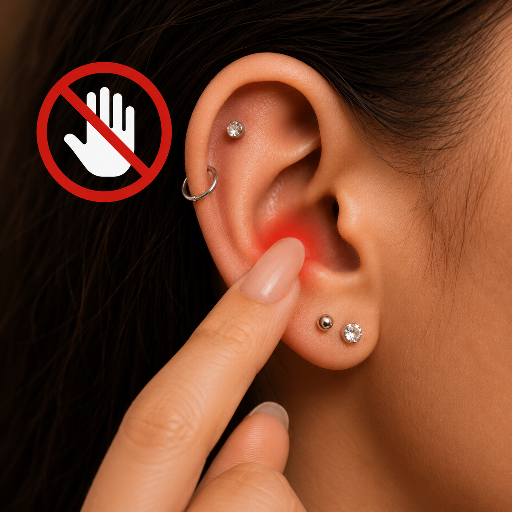
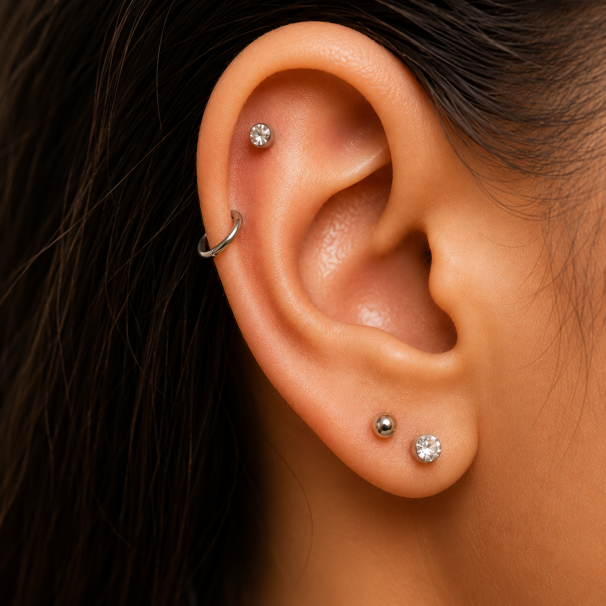
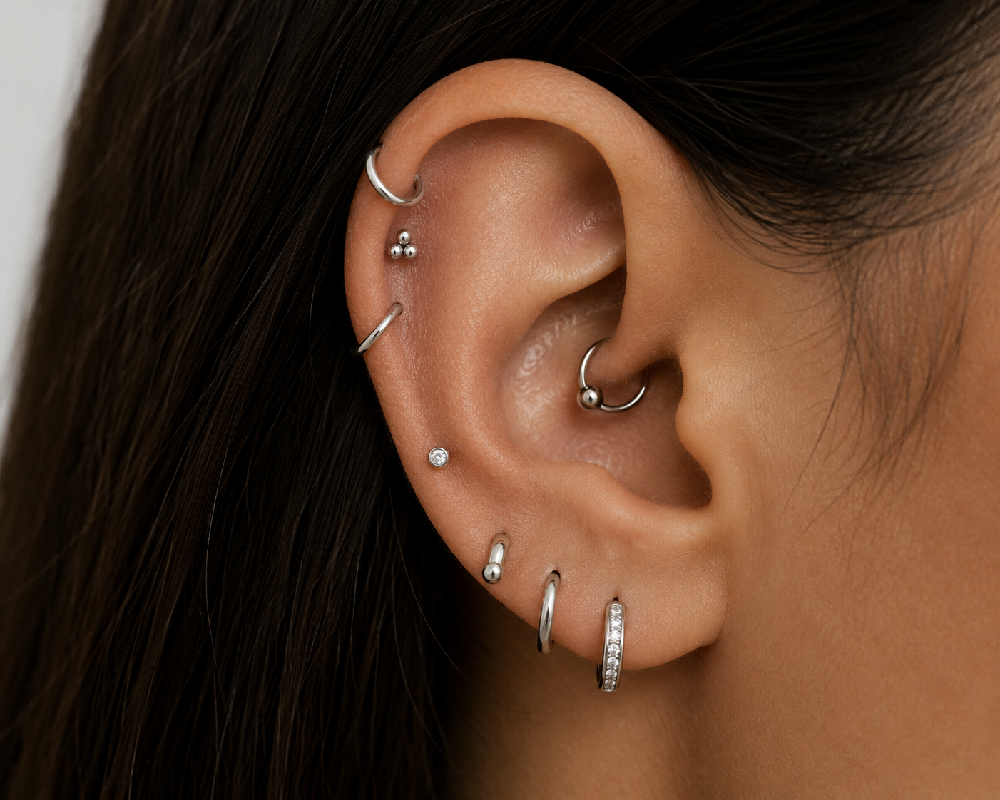

Cuidados Pós Perfuração

Higienização Correta e Cuidados Diários
Realize a limpeza do piercing com soro fisiológico e materiais limpos, seguindo as orientações do profissional responsável. Mantenha a região sempre higienizada e evite o uso de produtos que possam causar irritações durante a cicatrização.

Evite Atritos e Movimentos Desnecessários
Evite tocar, girar ou causar atritos no piercing durante o período de cicatrização, pois esses hábitos podem irritar a pele e aumentar a sensibilidade da região. Pequenos cuidados diários ajudam a evitar complicações.

Respeite o Processo de Cicatrização
Cada organismo possui um tempo de cicatrização diferente. Durante esse período, é importante evitar tocar no piercing com as mãos sujas, manter a higienização correta da região e evitar atritos ou impactos que possam causar irritações.

Cuidados com o Seu Piercing
Durante a cicatrização, é normal o piercing apresentar leve vermelhidão ou sensibilidade nos primeiros dias. Cada organismo possui um tempo diferente de recuperação, por isso os cuidados diários são extremamente importantes para garantir uma cicatrização saudável, confortável e sem complicações. Manter a região sempre limpa, evitar tocar no piercing com as mãos sujas e seguir corretamente as orientações do profissional ajudam a prevenir irritações e possíveis inflamações durante o processo. Além disso, evitar mexer na joia sem necessidade reduz atritos na pele, diminui o risco de machucados e contribui para uma recuperação mais rápida, segura e tranquila.
Evitar mexer na joia sem necessidade ajuda a reduzir irritações e contribui para uma cicatrização mais rápida e confortável.